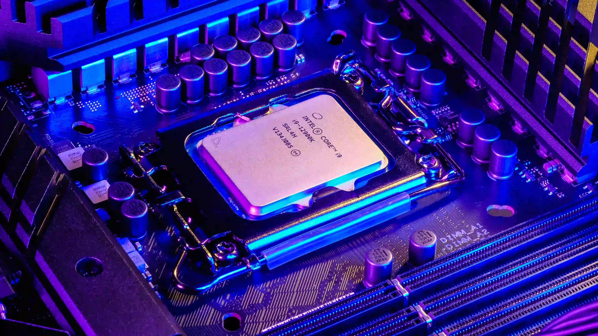

O futuro começa aqui
Bem-vindo ao TechPulse, seu portal de notícias sobre tecnologia, inovação e transformação digital. Acompanhe as principais tendências do mundo tecnológico.
Explorar notíciasBem-vindo ao TechPulse, seu portal de notícias sobre tecnologia, inovação e transformação digital. Acompanhe as principais tendências do mundo tecnológico.
Explorar notícias
Conheça as tecnologias que estão transformando o futuro.
Acompanhe as novidades sobre sistemas e desenvolvimento.
Descubra os principais avanços em equipamentos tecnológicos.